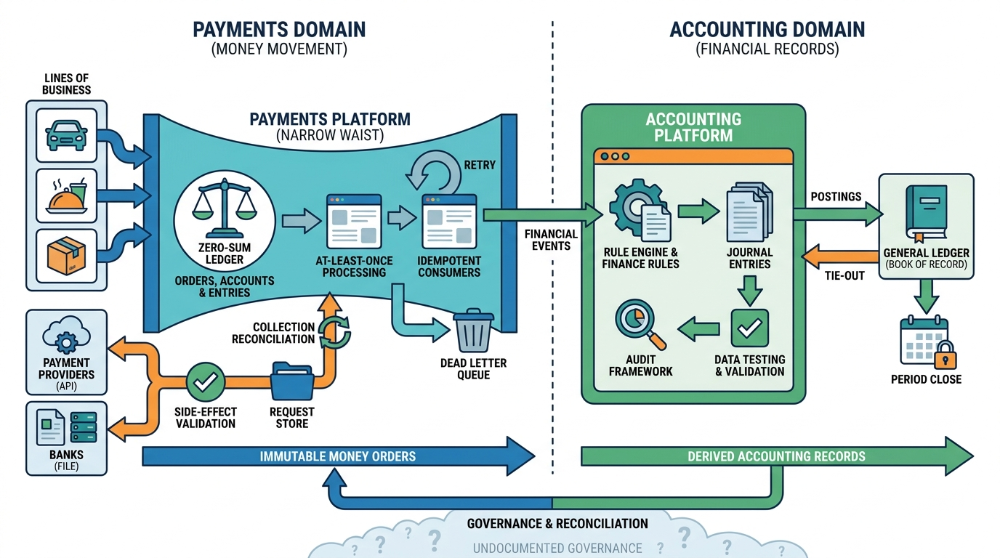

Part V — PRACTICE: How Others Built It
Uber's Payments Platform: A Ledger at the Center of Money Movement

Image generated by Google Gemini (gemini-3-pro-image-preview)
Part V — PRACTICE: How Others Built It

Image generated by Google Gemini (gemini-3-pro-image-preview)